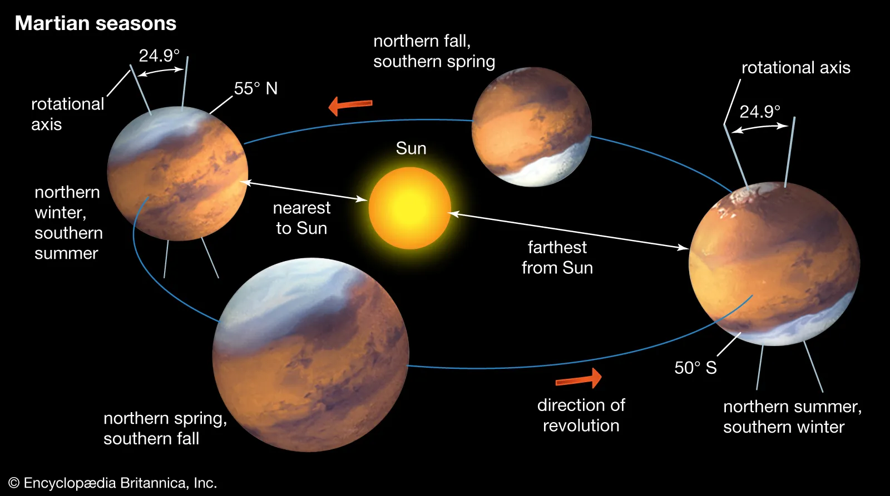
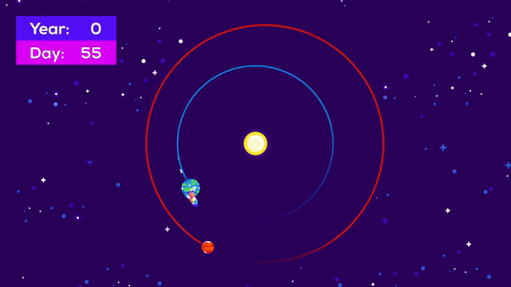

Orbit & Rotation
As Mars orbits the Sun, it completes one rotation every 24.6 hours, which is very similar to one day on Earth (23.9 hours). Martian days are called sols – short for "solar day." A year on Mars lasts 669.6 sols, which is the same as 687 Earth days.

The trip to Mars will take about seven months

The distance of Mars from Earth is currently 264,494,860 kilometers, equivalent to 1.768039 Astronomical Units.